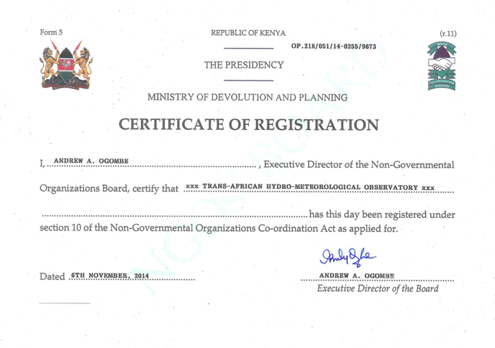

The journey continues
POSTED 13 JANUARY 2015
Having finished school I'm now back in Kenya to work for TAHMO full time. My official title is East Africa Field Director. I'm stoked to be starting my professional career with an organization that challenges me and demands my best work. My responsibilities include managing local staff, negotiating agreements with national meteorological agencies in East Africa, meeting with clients, and of course installing weather stations. I have a full plate of tasks in front of me but I believe I work best under these conditions when the stakes are high and there is little room for error.
Before I left Kenya last year, I submitted TAHMO's application to the Kenyan government to become an officially registered NGO (non-governmental organization). I'm happy to report that our certificate has been awarded. This is a big step forward for TAHMO as it allows us to open a local bank account, apply for work permits, and receive tax exemption. It's no guarantee of success but it's definitely a prerequisite.
On a professional level I'm excited for what TAHMO can accomplish in 2015. On a personal level, it's always difficult to leave behind family and friends to live abroad. Over the past few years I've been shuttling back and forth between the U.S. and Kenya for volunteer work with Engineers Without Borders, school, research, and now as an employee of TAHMO. The latest trip marks my 5th round-trip flight between the two countries.
As in the past, I intend to keep friends and family updated on my journey with this blog. Hopefully I can keep things interesting. Until next time, thanks for reading!